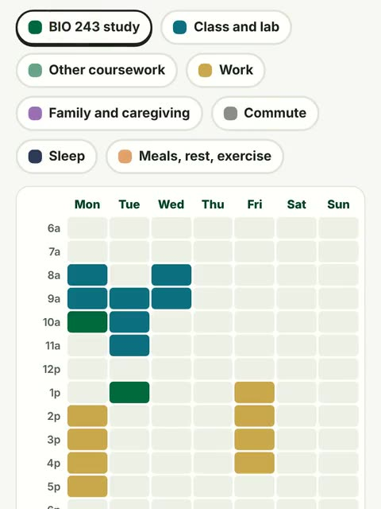
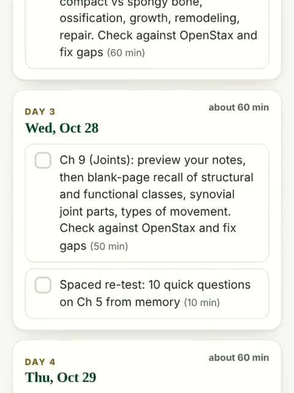
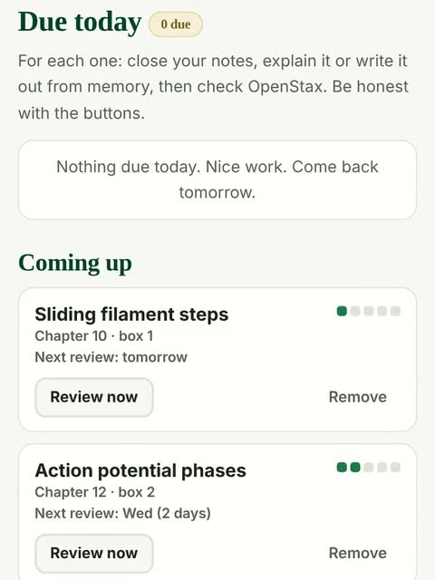
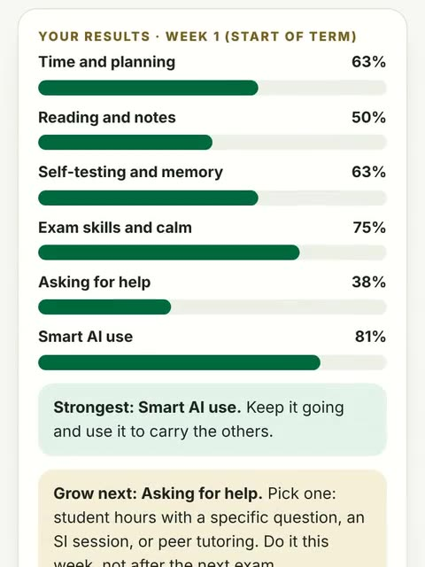
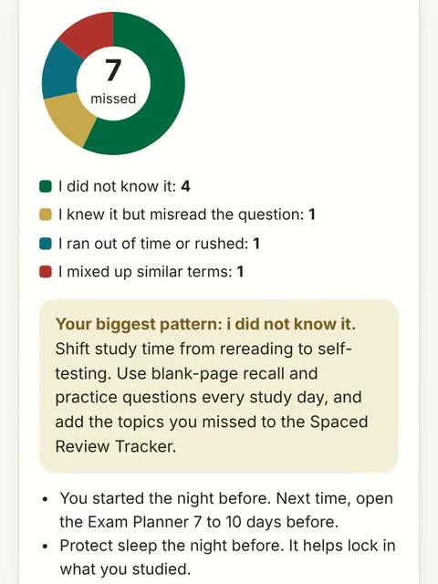
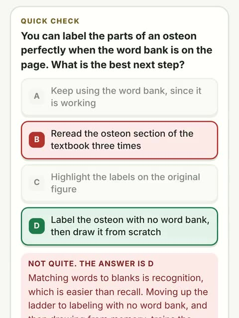
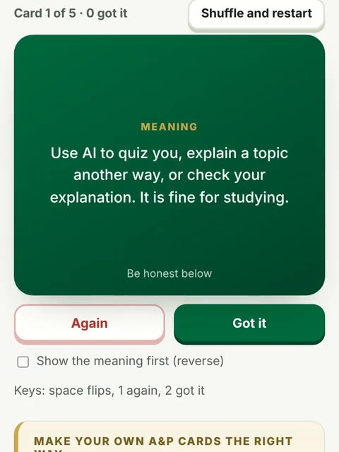
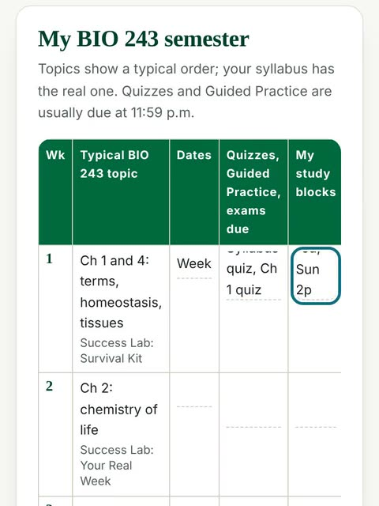

Study smarter in A&P, one week at a time.
Time management, study skills and using AI the right way, practiced on real BIO 243 content. Fifteen short weeks, five tools, a full book and three games.
Optional and free. Use it alongside BIOL U243. It does not replace your syllabus or Blackboard, and nothing you type here leaves your device.
- 15weekly steps through the term
- 14book chapters
- 55kwords of real BIO 243 advice
- 5planning and study tools
- 170flashcards
- 3games
Which week of the semester are you in?
Pick your week. You get one big idea, a five-minute action and one tool. Starting late is fine: start where you are.
Tools that do the planning with you
Each card shows the tool in action. Everything you enter stays on your device.
Swipe for more.
- Start here

Time Budget Planner
Paint your real week hour by hour and find your BIO 243 study time.
Open 
Exam Planner
Enter your exam date. Get a day-by-day plan that spaces and mixes review.
Open
Spaced Review Tracker
Shaky topics come back just as you start to forget them.
Open
Study Habits Self-Check
24 questions. See your strongest habit and the one to grow next.
Open
Exam Wrapper
Sort your misses by type and leave with a plan for the next exam.
Open
The Success Book
14 chapters, about 55k words, real A&P examples and diagrams.
Open
Flashcards
170 cards, both directions, missed cards come back.
Open
Printables
Semester planner, exam checklist, reflection journal, my study system.
Open
Practice the skills in a game
Every answer explains why, so even a wrong answer teaches you something.
Swipe for more.
The five BIO 243 AI rules
Presenting AI work as your own is an academic integrity violation under the BIO 243 syllabus. Used as a tutor, AI can really help. Here is where the line is.
- Tutor, not ghostwriterAsk AI to quiz you, explain a topic another way, or check your explanation. It is fine for studying.
- No AI on graded workNo AI on quizzes, exams or graded work (Guided Practice, Reading Guide, CircleIn posts) unless the assignment says so. Never paste quiz or exam questions into AI.
- Check it against the textbookAI makes confident mistakes. OpenStax and your notes win every disagreement.
- Keep it privateNever paste in personal information: yours or anyone else's. No student IDs, grades, health details or classmates' names.
- Every class is differentUSC Upstate leaves many AI decisions to each instructor. Follow each syllabus, ask when in doubt, and say how you used AI when it is allowed.
Help on campus
Strong students ask early. These are free for USC Upstate students.
- Student hoursYour instructor's office hours. Bring one specific question. Earlier is better.
- Supplemental InstructionWeekly SI sessions led by students who did well in the course, focused on the hardest content.
- Peer TutoringFree tutoring through the Student Success Center (QuadC).
- CircleInThe study community paid for by USC Upstate: flashcards, notes and questions with classmates.
- Counseling ServicesFor enrolled students, with 24/7 after-hours crisis support. 864.503.5195.
- Disability ServicesTesting and course accommodations. Register early; accommodations are not retroactive. 864.503.5199.
- IT Help DeskBlackboard, PDF and computer trouble. 864.503.5257 or helpdesk@uscupstate.edu.
- 988 LifelineCall or text 988 any time, day or night, if you are in crisis.